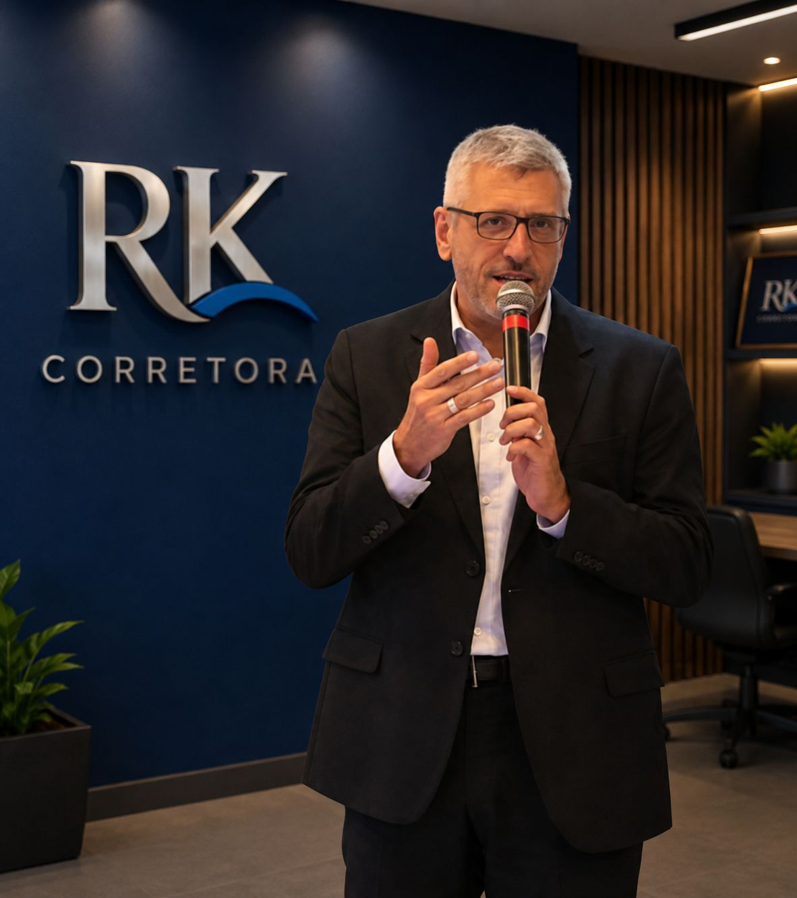

Sócio-fundador
Kury
Um dos fundadores da RK Corretora, à frente da condução estratégica do negócio e do relacionamento com as seguradoras parceiras. Sua trajetória no mercado de seguros orienta a forma como a RK estrutura soluções em saúde, patrimônio e previdência para pessoas e empresas.
Defende uma corretagem próxima e consultiva: ouvir com atenção antes de recomendar, e permanecer disponível depois que a apólice é assinada.
Defende uma corretagem próxima e consultiva: ouvir com atenção antes de recomendar, e permanecer disponível depois que a apólice é assinada.